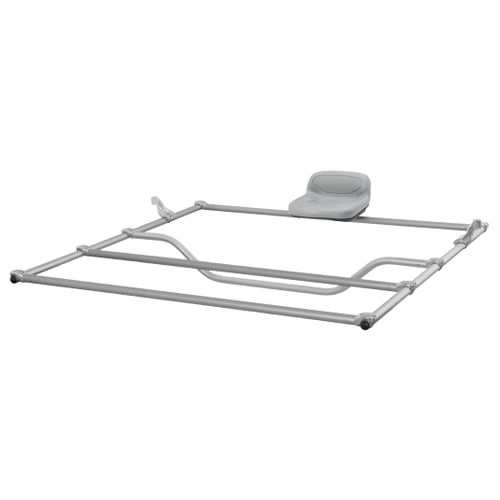

We Offer a Variety of Raft Accessories!
Raft footcones, cargo nets & floors, flip bags, camlock straps, raft covers for boats on trailers, lift handles, boat bags, and other handy whitewater river accessories are found below. We may add some of the goodies from the rescue page too, but for now those are under our Rivergear sections. The products here include those from Whitewater Designs, NRS, AIRE, Rocky Mountain, and other Boat People goodies we have here.
If you are looking for D-Rings, e-mail us with your needs so we can give you prices. There are a bit too many variations to list them all here, but we carry both pvc and hypalon D's in various colors and sizes. A few representative samples are below.
If you have any special requests call our shop at (406)231-4469 today!
